029 — Elastic Load Balancing y Auto Scaling
Parte: 02 — AWS: plataforma esencial
Nivel: intermedio · Horas estimadas: 4
Laboratorio: reliability · Estado: EXECUTABLE_CORE
🎯 Propósito
Construir una capa elástica que reparta tráfico y ajuste capacidad sin oscilar ni tumbar el servicio al desplegar. Aquí se aplican a AWS los cálculos de la clase 016 —histéresis, margen de arranque, rechazo de carga— y se añade lo que ninguna fórmula anticipa: que el drenado de conexiones y el tipo de comprobación de estado deciden si un despliegue pierde peticiones.
📚 Resultados de aprendizaje
Al finalizar podrás:
- Elegir entre balanceador de aplicación y de red según protocolo, latencia y necesidad de terminar TLS.
- Configurar comprobaciones de estado que distingan una instancia arrancando de una averiada.
- Dimensionar un grupo de autoescalado con umbrales, enfriamiento y periodo de gracia coherentes.
- Evitar la pérdida de peticiones al reducir capacidad, mediante drenado de conexiones.
- Diagnosticar un 502 y un 504 del balanceador sabiendo qué componente señala cada uno.
🧩 Conceptos centrales
| Concepto | Comprensión verificable |
|---|---|
grupo de destino |
Conjunto de destinos que reciben tráfico, con su propia comprobación de estado y política de enrutamiento. Es la unidad sobre la que actúan el balanceador y el autoescalado. |
comprobación de estado |
Sondeo periódico que decide si un destino recibe tráfico. Debe reflejar readiness —¿puede servir?— y no liveness, por lo visto en la clase 012. |
drenado de conexiones |
Periodo durante el cual un destino que se retira deja de recibir peticiones nuevas pero termina las que tiene en curso. Sin él, reducir capacidad corta transacciones a medias. |
periodo de gracia |
Tiempo que el autoescalado espera antes de evaluar la salud de una instancia recién creada. Corto de más, mata instancias que aún arrancan y entra en bucle. |
seguimiento de objetivo |
Política de escalado que ajusta capacidad para mantener una métrica en un valor deseado. Gestiona la histéresis automáticamente, a diferencia de las políticas por umbral. |
🧠 Modelo mental
Una cuenta AWS es una frontera de seguridad y facturación; los servicios se combinan mediante contratos, no como una lista de productos aislados.
Aplicado a esta clase, separa siempre cuatro planos: intención (qué necesita el usuario), configuración (qué declaramos), estado observado (qué existe de verdad) y evidencia (cómo sabemos que cumple). Confundirlos produce diseños que se ven correctos en un diagrama pero fallan al operar.
🗺️ Flujo de razonamiento

📖 Desarrollo
1. Cuatro balanceadores, tres decisiones
| Aplicación (ALB) | Red (NLB) | Gateway (GWLB) | |
|---|---|---|---|
| Capa | 7 (HTTP) | 4 (TCP/UDP) | 3 (GENEVE) |
| Enruta por | Ruta, host, cabecera, método | Puerto | Todo el paquete |
| Termina TLS | Sí | Sí, opcionalmente | No |
| IP fija | No | Sí, por zona | No |
| Latencia añadida | ~5-10 ms | ~1 ms | Depende |
| Preserva IP de origen | En cabecera X-Forwarded-For |
En el paquete | Sí |
Tres criterios deciden:
Protocolo. Si es HTTP y hace falta enrutar por ruta o host, ALB. Si es TCP, UDP o un protocolo propio, NLB.
IP fija. El NLB tiene una IP estática por zona; el ALB resuelve por DNS y sus IP cambian. Esto importa cuando un cliente externo debe incluir tu servicio en una lista de permitidos: con ALB no hay IP estable que dar.
IP de origen. El NLB preserva la IP del cliente en el propio paquete; el ALB la pone en X-Forwarded-For. Una aplicación que aplica límites de tasa por IP y lee la IP de la conexión verá la del balanceador —y limitará a todos como si fueran uno— salvo que lea la cabecera. Es un fallo que solo aparece bajo ataque.
Y un detalle de coste: ambos cobran por hora y por unidad de capacidad consumida, una métrica compuesta de conexiones nuevas, conexiones activas, ancho de banda y reglas evaluadas. La dimensión que domine determina la factura, y suele ser conexiones nuevas por segundo en servicios que no reutilizan conexión —lo de la clase 005—.
2. La comprobación de estado debe reflejar readiness
Un balanceador retira del reparto lo que falla la comprobación. Por tanto la comprobación debe responder «¿puede servir ahora?» y no «¿está el proceso vivo?».
camino /health/ready ← no / ni /health/live
intervalo 10 s
plazo 5 s ← menor que el intervalo
umbral sano 2 comprobaciones ← vuelve rápido
umbral insano 3 comprobaciones ← no se va por un fallo aislado
códigos válidos 200
La asimetría entre los dos umbrales es deliberada: entrar rápido y salir despacio. Un fallo aislado no debe retirar un destino sano, pero un destino que se recupera debe volver a recibir tráfico cuanto antes.
El tiempo de detección se calcula:
detección de fallo = intervalo × umbral insano = 10 × 3 = 30 s
Treinta segundos durante los cuales una fracción del tráfico va a un destino averiado. Bajarlo tiene coste: intervalos muy cortos generan carga de sondeo y falsos positivos bajo saturación. Con nueve destinos y 10 segundos son 54 sondeos por minuto, despreciable; con 200 destinos y 5 segundos son 2.400, que ya se nota.
El error que convierte una degradación en caída total, ya visto en la clase 012: si /health/ready comprueba la base de datos y esta cae, los nueve destinos fallan a la vez y el balanceador se queda sin ninguno sano. AWS mitiga esto con el modo fail open —si ningún destino está sano, envía tráfico a todos—, pero apoyarse en eso es apoyarse en un comportamiento de emergencia. Lo correcto es que la comprobación distinga dependencias esenciales de opcionales.
3. Autoescalado: los cuatro parámetros y su interacción
El seguimiento de objetivo es preferible a los umbrales manuales porque gestiona la histéresis solo: se declara el valor deseado de una métrica y el servicio calcula los ajustes.
$ aws autoscaling put-scaling-policy --auto-scaling-group-name cloudshop-asg \
--policy-name seguimiento-peticiones --policy-type TargetTrackingScaling \
--target-tracking-configuration '{
"PredefinedMetricSpecification": {
"PredefinedMetricType": "ALBRequestCountPerTarget",
"ResourceLabel": "app/cloudshop-alb/50dc.../targetgroup/cloudshop-tg/6d0e..."
},
"TargetValue": 420.0,
"ScaleInCooldown": 300,
"ScaleOutCooldown": 60
}'
Cuatro decisiones en ese documento:
La métrica. ALBRequestCountPerTarget es mejor que la CPU para servicios web: mide demanda directamente y no depende de que el trabajo sea de cómputo. Una carga limitada por E/S nunca dispara un escalado basado en CPU aunque esté saturada.
El valor objetivo. Se deriva de la capacidad medida por destino y del objetivo de utilización de la clase 016:
capacidad por destino a saturación 600 peticiones/s
objetivo de utilización 0,70
valor objetivo 420 peticiones/s
Los enfriamientos asimétricos. Subir rápido (60 s) y bajar despacio (300 s). Retirar capacidad demasiado pronto es lo que produce oscilación, y el coste de sobrar una instancia unos minutos es mucho menor que el de faltar.
El periodo de gracia, que se configura en el grupo:
periodo de gracia > tiempo de arranque hasta servir tráfico
medido: 118 s → se fija en 180 s
Si la gracia es menor que el arranque, el grupo marca insanas a las instancias nuevas, las termina y crea otras: un bucle que consume dinero y nunca converge.
4. Drenado: por qué reducir capacidad pierde peticiones
Cuando el autoescalado retira una instancia, el balanceador deja de enviarle peticiones nuevas pero puede tener transacciones en curso. Sin drenado, esas se cortan.
drenado 0 s la instancia se termina de inmediato
→ peticiones en vuelo cortadas → errores para el usuario
drenado 60 s deja de recibir nuevas, termina las que tiene
→ cero errores si ninguna dura más de 60 s
El valor debe ser mayor que la petición más larga:
$ aws elbv2 modify-target-group-attributes --target-group-arn arn:...:targetgroup/... \
--attributes Key=deregistration_delay.timeout_seconds,Value=60
Y hay una segunda pieza que casi siempre falta: la aplicación debe cooperar. El balanceador deja de enviar tráfico, pero el orquestador envía SIGTERM a la instancia. Si el proceso no lo atrapa y cierra de inmediato, el drenado del balanceador no sirve de nada —lo de la clase 002—:
def apagar(signum, frame):
servidor.stop_accepting() # no aceptar conexiones nuevas
servidor.wait_for_inflight(55) # terminar las en curso, con margen
sys.exit(0)
signal.signal(signal.SIGTERM, apagar)
Hay un orden que importa y que se equivoca a menudo: el proceso debe primero fallar la comprobación de readiness y solo después dejar de aceptar conexiones. Si deja de aceptar antes de que el balanceador se entere, hay una ventana de segundos en la que el balanceador sigue enviando tráfico a un puerto cerrado, y el usuario recibe un 502.
La secuencia correcta, con sus tiempos:
t+0 llega SIGTERM
t+0 /health/ready empieza a devolver 503
t+30 el balanceador ha detectado el fallo (intervalo × umbral) y deja de enviar
t+30 el proceso deja de aceptar conexiones nuevas
t+85 terminan las peticiones en curso
t+85 el proceso sale con 0
5. 502 y 504 del balanceador señalan cosas distintas
Los errores del balanceador se distinguen de los de la aplicación en las métricas y en los logs, y confundirlos alarga los incidentes:
| Código | Métrica de CloudWatch | Qué ocurrió | Dónde mirar |
|---|---|---|---|
| 502 | HTTPCode_ELB_502_Count |
El destino cerró la conexión o devolvió algo inválido | Logs del destino |
| 503 | HTTPCode_ELB_503_Count |
No hay destinos sanos | Comprobación de estado |
| 504 | HTTPCode_ELB_504_Count |
El destino no respondió dentro del plazo | Latencia y saturación del destino |
La causa más frecuente de 502 sin ningún error en la aplicación es una discordancia de tiempos de espera:
tiempo de espera del balanceador 60 s
tiempo de espera keep-alive del destino 5 s ← MENOR
El destino cierra la conexión inactiva a los 5 segundos; el balanceador, que la creía viva, envía una petición por ella y recibe un cierre. El resultado es un 502 intermitente, con más frecuencia cuanto menor sea el tráfico —porque las conexiones se quedan inactivas—.
La regla: el keep-alive del destino debe ser mayor que el tiempo de espera de inactividad del balanceador. Con 60 s en el balanceador, 75 s en el destino.
Y los logs del balanceador dan el detalle que las métricas no:
request_processing_time target_processing_time response_processing_time
0.001 -1 -1
Un -1 en target_processing_time significa que el destino nunca respondió: el problema no está en la aplicación sino en la conexión hacia ella. Distinguir eso de un 59.998 —el destino tardó y agotó el plazo— cambia por completo dónde hay que buscar.
🔬 Ejemplo trabajado
Cada despliegue de CloudShop produce entre 200 y 400 errores 502, y el autoescalado oscila creando y destruyendo instancias. Se atacan los dos problemas.
Problema 1 — errores en cada despliegue.
$ aws elbv2 describe-target-group-attributes --target-group-arn arn:...:targetgroup/cloudshop-tg \
--query 'Attributes[?Key==`deregistration_delay.timeout_seconds`].Value' --output text
0
Drenado a cero: las instancias se terminan con peticiones en vuelo. Se mide la duración de las peticiones para elegir el valor:
p50 38 ms
p95 91 ms
p99 185 ms
máx 4,2 s (exportación de informes)
Se fija en 60 s, con margen amplio sobre los 4,2 s del peor caso.
Pero al repetir el despliegue siguen apareciendo 502, solo que menos:
antes del cambio 340 errores
después 96 errores
La aplicación no atrapaba SIGTERM. Se añade el manejador y se comprueba el orden:
versión inicial: SIGTERM → cierra el socket inmediatamente
el balanceador tarda 30 s en enterarse → 502 durante 30 s
versión correcta: SIGTERM → /health/ready devuelve 503
espera 35 s (intervalo 10 × umbral 3 + margen)
deja de aceptar y drena lo en curso
tras el arreglo completo: 0 errores en 5 despliegues consecutivos
Problema 2 — oscilación del autoescalado.
$ aws autoscaling describe-scaling-activities --auto-scaling-group-name cloudshop-asg \
--max-items 8 --query 'Activities[].[StartTime,Description]' --output text
2026-08-01T11:42 Terminating EC2 instance: i-0f3a
2026-08-01T11:39 Launching a new EC2 instance: i-0f3a
2026-08-01T11:36 Terminating EC2 instance: i-0c8b
2026-08-01T11:33 Launching a new EC2 instance: i-0c8b
Crea y destruye cada 3 minutos. La configuración:
política umbral simple: sube al 70 % de CPU, baja al 65 %
enfriamiento 120 s
gracia 60 s
tiempo de arranque medido 118 s
Dos fallos independientes:
1. Histéresis insuficiente: con 8 instancias al 71 %, añadir una baja
la utilización a 63 % → dispara la reducción → vuelve a 71 %.
2. Gracia (60 s) < arranque (118 s): las instancias nuevas se marcan
insanas antes de poder servir y se terminan.
Se sustituye por seguimiento de objetivo sobre peticiones por destino:
capacidad medida por destino a saturación 600 peticiones/s
objetivo 0,70 420 peticiones/s
enfriamiento de subida 60 s
enfriamiento de bajada 300 s
periodo de gracia 180 s (> 118 medidos)
Se elige peticiones por destino y no CPU porque el servicio pasa el 60 % del tiempo esperando a la base de datos: la CPU nunca refleja la saturación real.
Resultado en 7 días:
```text antes después errores 502 por despliegue 340 0 actividades de escalado/día 48 6 instancias en régimen 6-11 osc. 7-9 p95 en hora punta 410 ms 94 ms coste mensual de cómputo 412 USD 338 USD
**El coste bajó un 18 % al dejar de oscilar**: cada instancia creada y destruida a los 3 minutos se facturaba igual y no llegaba a servir tráfico útil.
## 🧪 Laboratorio guiado
Ejecuta desde la raíz:
```bash
python classes/part-02-aws-core-platform/029-elastic-load-balancing-y-auto-scaling/lab.py
El laboratorio selecciona el motor de práctica reliability y produce
lab_result.json. El escenario, sus comprobaciones y el artefacto esperado corresponden a
esta clase; no requiere credenciales y deja explícito qué debe revalidarse en un sandbox real.
- Lee
exercise.stepsy formula una predicción antes de ejecutar. - Ejecuta la práctica y verifica todos los elementos de
checks. - Provoca el caso de
negative_testy explica la señal observada. - Materializa
servicio-elastico-awsenevidence/usando la plantilla indicada. - Para proveedor real, sigue
sandbox.requires, registra costo y ejecutadestroy.
Evidencia esperada
El artefacto principal es un escenario de fallo con objetivo y recuperación medida. Además, la entrega debe incluir el comando ejecutado, la salida estructurada y una conclusión que no exceda lo observado.
🏆 Reto verificable
Construye servicio-elastico-aws para el caso CloudShop. Incluye una alternativa descartada,
un supuesto que pueda falsarse, una prueba de fallo y una decisión de rollback.
✅ Criterio de aceptación
- [ ]
lab.pytermina con código 0 y genera JSON válido. - [ ] La entrega conecta al menos tres requisitos con mecanismos verificables.
- [ ] Existe una prueba positiva y una prueba negativa con evidencia.
- [ ] Seguridad, costo y operación aparecen como decisiones, no como anexos.
- [ ] Se declara una limitación y una condición que obligaría a revisar el diseño.
- [ ] Otra persona puede repetir el recorrido sin conocimiento tácito.
⚠️ Errores frecuentes
| Síntoma | Causa probable | Corrección |
|---|---|---|
| Cada despliegue produce cientos de 502 | Drenado a cero: las instancias se terminan con peticiones en vuelo | Fija el drenado por encima de la petición más larga y atrapa SIGTERM en la aplicación. |
| Se configura el drenado y siguen apareciendo 502, aunque menos | La aplicación cierra el socket antes de que el balanceador detecte el cambio de estado | Al recibir SIGTERM, falla readiness primero y espera intervalo × umbral antes de dejar de aceptar. |
| El autoescalado crea y destruye instancias cada pocos minutos | Umbrales de subida y bajada demasiado próximos, o gracia menor que el arranque | Usa seguimiento de objetivo y fija la gracia por encima del arranque medido. |
| El servicio se satura y el autoescalado no reacciona | La métrica es la CPU y la carga está limitada por E/S | Escala por peticiones por destino o por una métrica que refleje la demanda real. |
| Aparecen 502 intermitentes, más frecuentes con poco tráfico | El keep-alive del destino es menor que el tiempo de espera del balanceador | Configura el keep-alive del destino por encima del plazo de inactividad del balanceador. |
🛡️ Seguridad, ética y costo
Trabaja con cuentas propias o sandboxes autorizados. No publiques secretos, identificadores reales ni datos personales. Antes de crear recursos pagos define presupuesto, etiquetas y comando de destrucción; después verifica que no queden recursos huérfanos. Los ejemplos locales enseñan contratos, pero no certifican cumplimiento ni disponibilidad de producción.
❓ Preguntas de comprobación
- ¿En qué dos casos concretos necesitas un balanceador de red en vez de uno de aplicación?
- Con intervalo de 10 s y umbral insano de 3, ¿cuánto tarda en detectarse un fallo y qué ocurre entretanto?
- ¿Por qué los umbrales sano e insano deben ser asimétricos, y en qué dirección?
- Describe la secuencia correcta desde que llega SIGTERM hasta que el proceso sale sin perder peticiones.
- Un log del balanceador muestra
target_processing_time = -1. ¿Qué significa y dónde buscas?
🔗 Referencias
- AWS (2024). Application Load Balancer: target groups and health checks — parámetros y semántica. https://docs.aws.amazon.com/elasticloadbalancing/latest/application/target-group-health-checks.html
- AWS (2024). Deregistration delay — drenado de conexiones y su interacción con el ciclo de vida. https://docs.aws.amazon.com/elasticloadbalancing/latest/application/edit-target-group-attributes.html
- AWS (2024). Target tracking scaling policies — métricas predefinidas y enfriamientos. https://docs.aws.amazon.com/autoscaling/ec2/userguide/as-scaling-target-tracking.html
- AWS (2024). Troubleshoot your Application Load Balancer — causas de 502, 503 y 504 y campos del log de acceso. https://docs.aws.amazon.com/elasticloadbalancing/latest/application/load-balancer-troubleshooting.html
- Beyer, B. et al., eds. (2016). Site Reliability Engineering, cap. 20 — reparto de carga y comprobaciones de salud. https://sre.google/sre-book/load-balancing-datacenter/
- Documentación oficial vigente del servicio implementado; registra URL y fecha de consulta.
📥 Descargar: Parte 02 en PDF · Recorrido de AWS en PDF · Manual integral